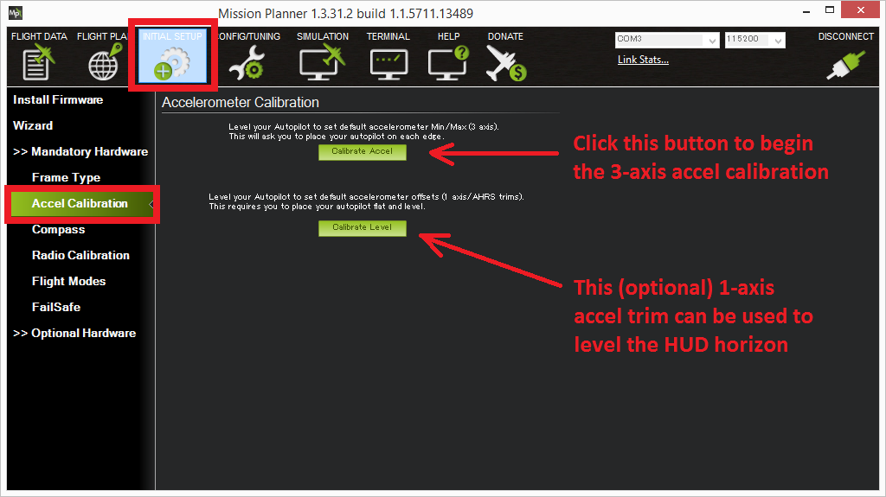

AutoTrim¶
Wind of course has a strong effect on your copter and will push it around. However you may also find that while flying in stabilize mode, even in a windless environment your copter tends to always drift away in the same direction. This can largely be corrected using the “Save Trim” or “Automatic Trim” functions.
Note
For most users this procedure is not necessary because the accelerometer calibration does a good job of setting the trim values.
Save Trim¶
Save trim is the simpler method and involves essentially transferring your radio transmitter’s trims to the autopilot (video demo here).
Check that your CH7 switch goes above 1800 on the MissionPlanner’s Hardware > Mandatory Hardware > Radio Calibration screen
{kind=link}
Set the CH7 Option to Save Trim on the Software > Copter Pids screen and press the “Write Params” button
{kind=link}
With your CH7 switch in the off position, fly your copter in Stabilize mode and use your transmitters’s roll and pitch trim to get it flying level
Land and put your throttle to zero
Release the roll and pitch sticks and switch the CH7 switch high for at least 1 second. The words “Trim saved” should appear in the MP’s Flight Data screen’s Messages tab
Reset your transmitters roll and pitch trims back to the center and fly again and it should fly level now. If it does not repeat steps 3, 4 & 5
Auto Trim¶
With auto trim the roll and pitch trim are captured as you fly in a stable hover.
Find a wind free environment with sufficient space to fly your copter without crashing into something
Put the vehicle in Stabilize mode
Hold throttle down and rudder right for 15seconds or until you see the small red, blue and yellow leds flash in a cyclic pattern
Fly your copter for about 25 seconds in a stable hover
Land and put your throttle to zero and wait for a few seconds (the trims parameters are being saved)
Take off again in stabilize mode and check if your copter is flying level now. If not repeat steps 2, 3 and 4
Note
You can also test these procedures above are operational on the ground with your battery disconnected. Connect your autopilot to the mission planner and observing the Flight Data screen as you simulate completing the steps above.
{kind=link}
Note
You can manually set the trim by modifying the AHRS_TRIM_X and AHRS_TRIM_Y. Roll trim is AHRS_TRIM_X, Pitch trim is AHRS_TRIM_Y. Both values are in radians with left roll and forward pitch being negative numbers.
Note
It is nearly impossible to get rid of all drift so that your copter remains completely motionless without any input.
Video demonstrations of Save Trim and Auto Trim¶
Desktop method¶
The trim can also be updated by setting the vehicle level, connecting to the Mission Planner (or perhaps other ground stations) and selecting Initial Setup, Mandatory Hardware, Accel Calibration and pushing the lower “Calibrate Level” button.
{kind=link}
Please note though that making the HUD level while the vehicle is on the ground does not necessarily mean it won’t drift horizontally while flying because of other small frame issues including the flight controller not being perfectly level on the frame and slightly tilted motors.